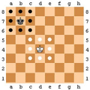
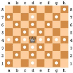
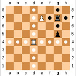
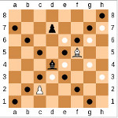
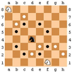
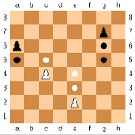

Re 
Il re può muoversi in una qualunque delle caselle adiacenti a quella in cui si trova purché questa sia vuota o contenga un pezzo avversario. Può effettuare anche una mossa speciale chiamata arrocco
Regina 
La regina può muoversi in diagonale, verticale ed orizzontale purché le caselle attraversate siano vuote ad eccezione dell'ultima che può contenere un pezzo avversario.
Torre 
La torre può muoversi in verticale ed orizzontale purché le caselle attraversate siano vuote ad eccezione dell'ultima che può contenere un pezzo avversario.
Alfiere 
L'alfiere può muoversi in diagonale purché le caselle attraversate siano vuote ad eccezione dell'ultima che può contenere un pezzo avversario.
Cavallo 
Il cavallo può muoversi solo "a L", ovvero in ogni sua mossa si può muovere di due caselle in verticale ed una in orizzontale o viceversa.
Pedone 
Il pedone può muoversi in avanti di una casella (quando si trova nella casella di partenza può muoversi anche di 2 caselle) purché il suo percorso sia libero (inclusa la casella di destinazione). Può mangiare un pezzo avversario spostandosi al suo posto se questo si trova in una delle due caselle diagonali adiacenti al pedone stesso. Può mangiare anche effettuando una presa en passant.
Mosse Speciali
Arrocco 
L'arrocco è una mossa speciale che coinvolge il re ed una delle due torri e può essere effettuata solo in condizioni particolari. Consiste nello spostare il re di due caselle verso la torre e di spostare quest'ultima nella casella attraversata dal re. Le condizioni sotto le quali si può effettuare l'arrocco sono:
- il re non deve essere sotto scacco
- nessuna delle caselle tra il re e la torre deve essere occupata
- nessuna delle caselle attraversate dal re deve esesere sotto attacco da parte di un pezzo avversario
- né il re né la torre interessata devono essere mai stati mossi
Presa en passant 
La presa en passant è una mossa speciale che coinvolge due pedoni. Se un pedone avversario si è appena mosso in avanti di due caselle andando ad affiancare un proprio pedone questo lo può mangiare spostandosi in diagonale ed andando ad occupare la casella attraversata dall'avversario.
Promozione
Quando un pedone raggiunge l'ultima traversa della scacchiera può essere promosso (a scelta del giocatore) in una regina, in una torre, in un alfiere o in un cavallo